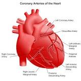
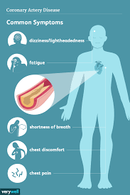
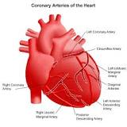
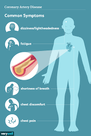
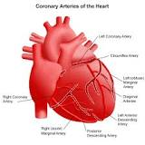
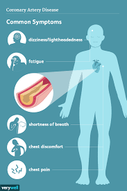
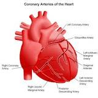
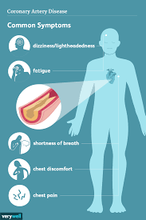

At Heartwise, we are dedicated to empowering you with the knowledge and resources needed to take charge of your heart health. Our mission is to provide a one-stop platform that offers reliable and up-to-date information about maintaining a healthy heart, preventing cardiovascular diseases, and managing existing conditions.
The heart is a vital organ that plays a crucial role in sustaining life, and we understand the significance of keeping it in optimal condition. Whether you're a health-conscious individual seeking preventative measures or someone with a heart condition looking for expert guidance, our website caters to all. We offer a wide array of articles, videos, and infographics covering topics such as heart-healthy diets, exercise routines, stress management, and the latest advancements in cardiology.
Our team of experienced medical professionals and experts ensures that the information provided on Heartwise is accurate, evidence-based, and easy to understand. We believe that knowledge is power, and with the right information at your fingertips, you can make informed decisions to lead a heart-healthy lifestyle.
At HealthWise we have a team of medical experts, doctors, and researchers who work tirelessly to curate evidence-based content. Our goal is to empower individuals like you with knowledge, enabling you to make informed decisions about your health and well-being.
Explore our vast library of articles, covering topics such as common infectious diseases, chronic conditions, mental health issues, and lifestyle-related illnesses. Each article is written in a reader-friendly manner, breaking down complex medical jargon into easily understandable language, ensuring that you get the information you need without feeling overwhelmed.
Additionally, HealthWise offers expert-reviewed health tips and guidelines to promote a healthier lifestyle. From diet and nutrition recommendations to exercise routines and stress management techniques, our lifestyle section equips you with the tools you need to lead a balanced and fulfilling life.
We understand the importance of emotional well-being, which is why we have a dedicated section on mental health. Learn about various mental health disorders, treatment options, coping strategies, and the importance of seeking help when needed.
your trusted source for comprehensive information on various health conditions and diseases. We are committed to providing accurate, up-to-date, and reliable resources to help you understand, prevent, and manage a wide range of medical conditions.
HealthWise is committed to raising awareness about preventive measures and vaccinations to protect you and your loved ones from infectious diseases. Stay up-to-date with the latest news on vaccines, outbreaks, and public health initiatives.
We value the privacy and security of our users. Health Disease Hub adheres to strict data protection regulations to ensure that your personal information is safe and handled responsibly.
We encourage you to actively participate in our community by engaging with our content, sharing your experiences, and asking questions. Remember, every individual's health journey is unique, and through mutual support, we can foster a sense of community and collective wellness.
Thank you for choosing Health Disease Hub as your reliable medical resource. Together, let's embark on a journey towards better health and a brighter future.